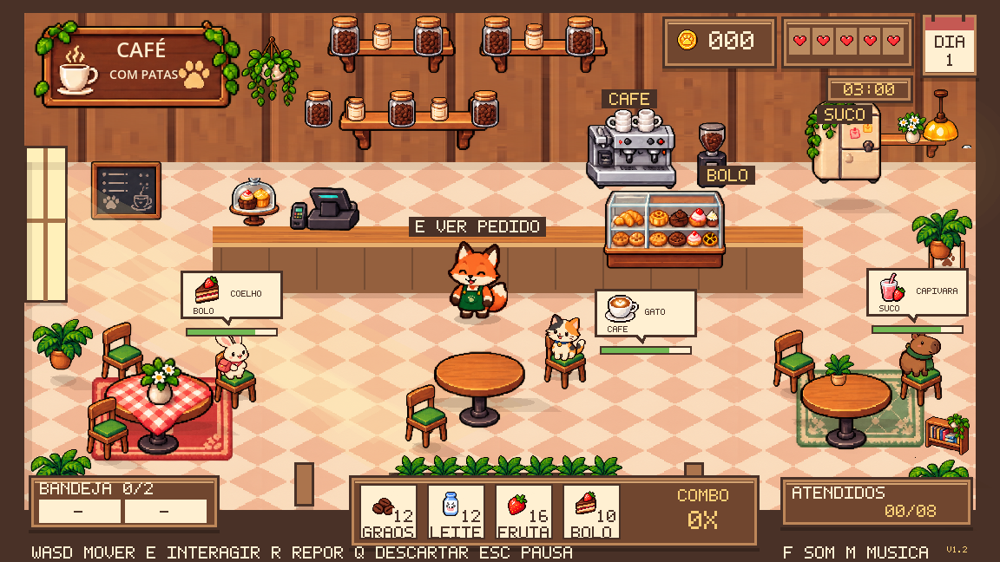

Seu primeiro turno.
Atenda oito clientes em três minutos. Sirva pedidos completos, ganhe moedas e preserve os cinco corações de reputação.
Leia as mesas.
Entre no jogo, clique em Jogar e pressione Enter. O balão mostra os produtos pedidos. A barra indica a paciência: atenda primeiro quem está com menos tempo.
O relógio começa a contar assim que a partida inicia. A paciência de cada cliente só começa quando ele chega à mesa.

Prepare no lugar certo.
Use WASD ou as setas para chegar à estação. A indicação na tela informa o preparo disponível; pressione E e aguarde a conclusão.
- Cafeteira: café.
- Vitrine: bolo.
- Geladeira: suco.

Leve dois produtos.
Depois do primeiro preparo, vá a outra estação e prepare o segundo. Os dois espaços da bandeja mostram o que você está carregando.
Você pode levar dois produtos iguais ou diferentes. Com a bandeja cheia, entregue algo antes de preparar outro item. Q descarta o último produto.
Sirva em volta da mesa.
Aproxime-se de qualquer lado livre da mesa ocupada e pressione E. Os produtos compatíveis da bandeja são entregues; os demais continuam com você.
Uma marca verde mostra o que já foi servido. Se faltar algo, prepare e volte. A recompensa chega quando todo o pedido está completo.

Cuide do estoque e do tempo.
Os ingredientes aparecem na parte inferior. Com a bandeja vazia, aproxime-se da área de reposição e pressione R: a reposição leva três segundos. Confira a mensagem de interação na tela.
O gato tem 44 segundos, o coelho 52 e a capivara 64 para pedidos simples. Pedidos duplos somam 24 segundos. Se a paciência acabar, a cafeteria perde um coração.
Controles à mão.
| Tecla | Ação |
|---|---|
| WASD / setas | Mover a raposa |
| E | Preparar / servir |
| R | Repor estoque na área indicada, com bandeja vazia |
| Q | Descartar o último item da bandeja |
| Esc | Pausar / continuar |
| M / F | Alternar música / efeitos sonoros |
| B | Alternar reforço de graves da música |
| + / − | Ajustar volume |
| L | Alternar iluminação |
Use um computador com teclado e navegador com WebGL 2. Esta versão ainda não possui controles por toque. O recorde é salvo no navegador quando o armazenamento está disponível.